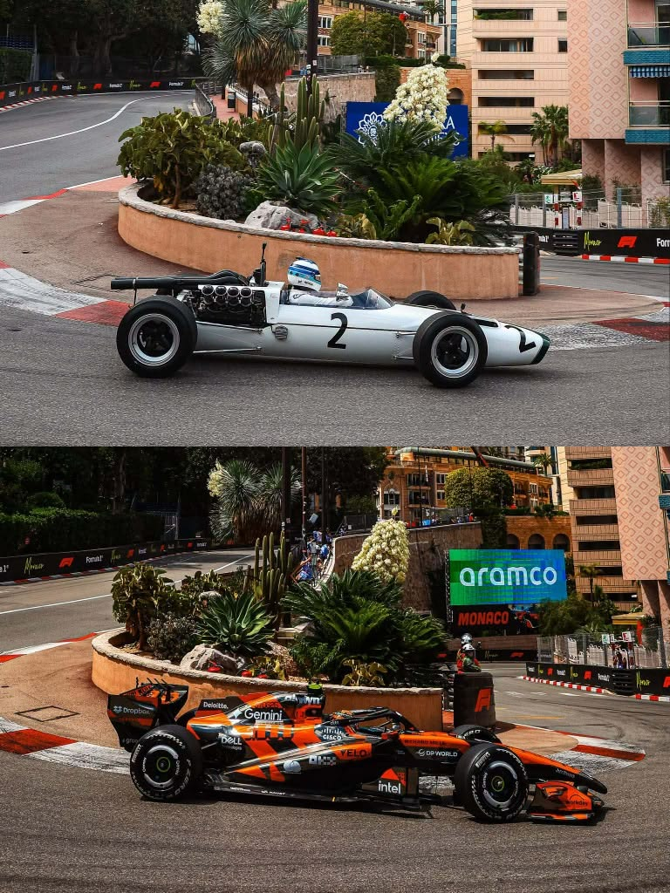

1950: Primer Campeonato Mundial de Fórmula 1
El primer Campeonato Mundial de Fórmula 1 se celebró en 1950, con Giuseppe Farina como el primer campeón.
Mundo Fórmula 1
La Fórmula 1 es el máximo nivel del automovilismo internacional, con una rica historia que se remonta a la década de 1950. Desde sus inicios, ha evolucionado en términos de tecnología, seguridad y competitividad, convirtiéndose en uno de los deportes más emocionantes y seguidos del mundo.
El primer Campeonato Mundial de Fórmula 1 se celebró en 1950, con Giuseppe Farina como el primer campeón.
Durante la década de 1960, pilotos como Jim Clark y Graham Hill dominaron la Fórmula 1, estableciendo récords y dejando una marca imborrable en la historia del deporte.
En los años 80, la Fórmula 1 experimentó avances tecnológicos significativos, con la introducción de la aerodinámica y los motores turboalimentados.
Durante la década de 2000, Ferrari y Michael Schumacher dominaron la Fórmula 1, ganando múltiples campeonatos y estableciendo récords que aún perduran.
